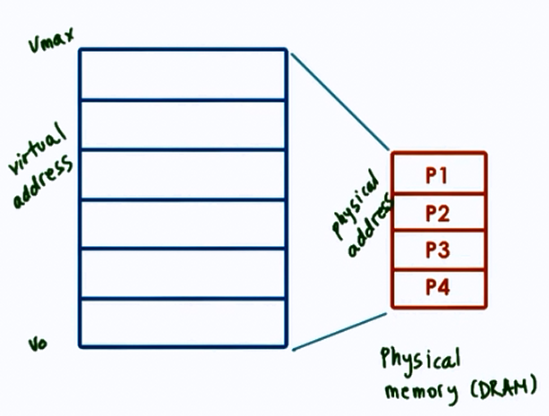
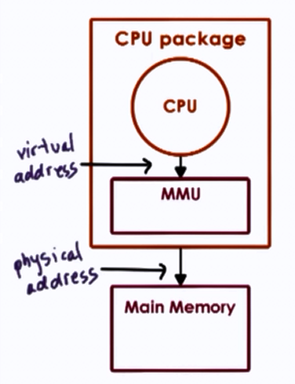
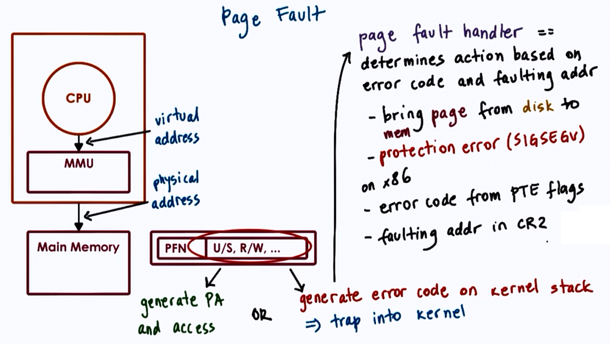
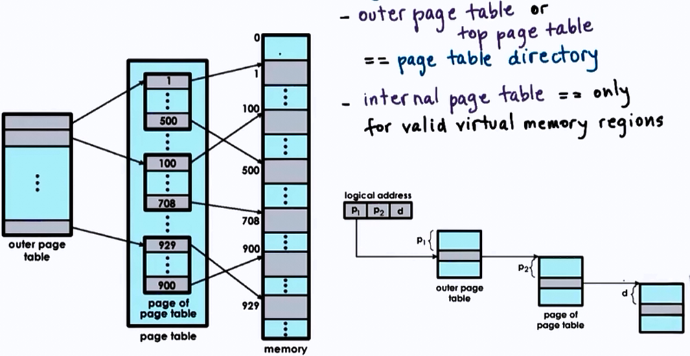
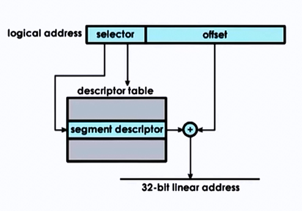
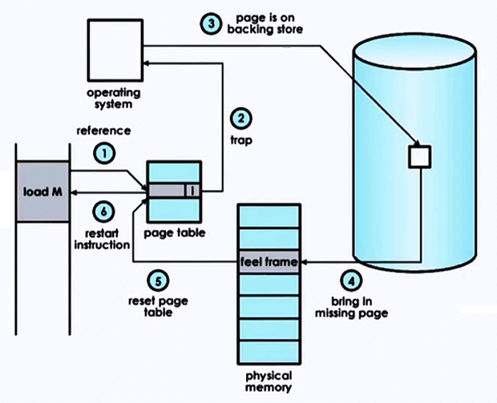

Memory Management
Operating systems:
- uses intelligently size containers
- memory pages of segments
- Not all parts are needed at once
- tasks operate on subset of memory
- Optimized for performance
- reduce time to access state in memory
- leads to better performance!
- reduce time to access state in memory
Memory Management Goals

Virtual vs Physical memory
- Allocate
- allocation, replacement
- Arbitrate
- address translation and validation
Page-based Memory Management
- Allocate => pages => page frames
- Arbitrate => page tables
Segment-based Memory Management
- Allocate => segments
- Arbitrate => segment registers
Hardware Support

Memory Management Unit (MMU)
- translate virtual to physical address
- reports faults (illegal access, permission, not present in memory)
Registers
- pointers to page tables
- base and limit size, number of segments
Cache
- Translation lookaside buffer
- Valid VA-PA translations using TLB
Translation
- Actual PA generation done in hardware
Page Tables

- OS creates page table per process
- On context switch, switch to valid page table
- Updates register that points to correct page table. E.g CR3 on x86 architecture
Page Table Entry (PTE)

Flags
- Present (valid/invalid)
- Dirty (written to)
- Accessed (for read or write)
- Protection bits => RWX
Page Table Entry on x86

Flags
- Present
- Dirty
- Accessed
- R/W permission bit 0: R only, 1: R/W
- U/S permission bit 0: usermode, 1: superviser mode only
- others: caching related info (write through, caching disabled)
- unused: for future use
Page faults

Page Table Size

- 32 bit architecture
- Page Table Entry (PTE) = 4 Bytes, including PFN + flags
- Virtual Page Number (VPN) = 2^32/page_size
- Page size = 4KB (...8KB, 2MB, 4MB, 1GB)
Therefore Page Table Size = (2^32 * 2^12)*4B = 4MB (per process)
- for 64 bit architecture
- Page Table Entry (PTE) = 8 Bytes
- Page size = 4KB
Page Table Size = (2^64 * 2^12)*8B = 32PB (per process!)
- processes don't use entire address space
- even on 32 bit architecture, it will not always use all 4GB
But Page Table assumes an entry per VPN regardless, of whether corresponding virtual memory is needed or not.
Hierarchical Page Tables

On malloc, a new internal page table may be allocated.
Address split:
| Page Number | offset | |
|---|---|---|
| P1 | P2 | d |
| 12 | 10 | 10 |
- inner table addresses => 2^10 * page_size = 2^10*2^10 = 1MB
- don't need an inner table for each 1MB virtual memory gap
Additional Layers
- page table directory pointer (3rd level)
-
page table directory map (4th level)
-
Important on 64 bit architectures
- larger and more sparse => larger gaps would save more internal page table components

Tradeoffs of Multilevel Page Tables
Advantages
- Smaller internal page tables/directories
- Granularity of coverage
- Potentially reduced page table size
Disadvantages
- More memory accesses required for translation
- increased translation latency
Overheads of Address Translation
For each memory reference :
| Single level page table | Four level page table |
|---|---|
| x1 access to PTE | x4 accesses to PTE |
| x1 access to mem | x1 access to mem |
which results in slowdown.
Page Table Cache

Translation Lookaside Buffer
- MMU level address translation cache
- On TLB miss => page table access from memory
- has protection/validity bits
-
small number of cached address => high TLB hit rate
- temporal and spatial locality
-
Example
- x86 Core i7
- per core : 64-entry data TLB
128-entry instruction TLB - 512-entry shared second-level TLB
- per core : 64-entry data TLB
- x86 Core i7
Inverted Page Tables

Hashing Page Tables

Segmentation
Segmentation is the process of mapping virtual to physical memory using segments.
- Segments: arbitrary granularity (size)
- e.g. code, heap, data, stack..
- address = segment - selector + offset
- Segment
- contiguous physical memory
- segment size = segment base + limit registers

Segmentation + Paging

Page Size
- 10 bit offset => 1 KB page size [2^10]
- 12 bit offset => 4 KB page size [2^12]
In real world examples,
- Linux/x86 : 4 KB, 2MB, 1GB
- Solaris/Sparse: 8kB, 4MB, 2GB
| Large | |
|---|---|
| page size | 2 MB |
| offset bits | 21 bits |
| reduction factor on page table size | x512 |
Advantages
- larger pages
- fewer page table entries, smaller page tables, more TLB hits
Disadvantages
- internal fragmentation => wastes memory
Memory Allocation
-
Memory allocator
- determines VA to PA mapping
- address translation, page tables => simply determine PA from VA and check validity/permsissions
-
Kernel Level Allocators
- kernel state, static process state
- User Level Allocators
- dynamic process state (heap), malloc/free
- e.g. d/malloc, jemalloc, Hoard, tcmalloc
Demand Paging
- Virtual Memory >> Physical Memory
- virtual memory page is not always in physical memory
- physical page frame saved and restored to/from secondary storage
Demand paging:
- pages swapped in/out of memory & a swap partition (e.g. on a disk)

- Original PA != PA after swapping
- if page is "pinned", swapping is disabled
When pages should be swapped?
- page(out) daemon
- when memory usage is above threshold
- when CPU usage is below threshold
Which page should be swapped out?
- pages that won't be used
- history based prediction
- Least Recently Used (LRU policy). Access bit tracks if page is referenced.
- page that don't need to be written out
- Dirty bit to track if modified
- avoid non-swappable pages
Checkpointing
- Failure and Recovery management technique
- periodically save process state
- failure may be unavoidable but can restart from checkpoint, so recovery would be faster
Simple Approach
- pause and save
Better Approach
- write-protect and copy everything at once
- copy diffs of dirties pages for incremental checkpoints
- rebuild from multiple diffs, or in background
Checkpointing can also be used in other services:
-
Debugging
- Rewind-Replay
- rewind = restart from checkpoint
- gradually go back to earlier checkpoints until error is found
-
Migration
- continue on another machine
- disaster recovery
- consolidation
- repeated checkpoints in a fast loop until pause and copy becomes acceptable (or unavoidable)